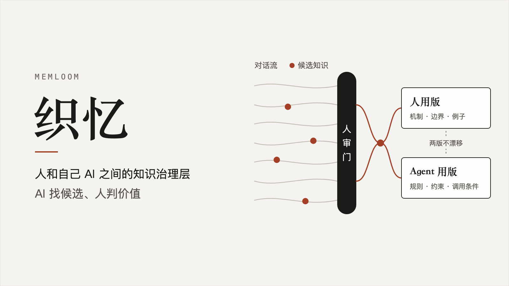

产品
-

探月方舟 Moonfall
让创作者带自己的 AI 做“桌面会自己动”的桌游的通用框架
2026.07 · 探月计划具身智能黑客松 Agent 赛道 · 亚军为桌游中的 NPC 与玩家分身注入 Agent，使其能够感知局势、理解玩家意图并自主决定下一步；再由轮式机器人、机械臂把这些决策变成桌面上的真实行动，改变地形、资源和游戏局势。
-

织忆 Memloom
人和自己 AI 之间的知识治理层：AI 找候选、人判价值
2026.09 · 中科大“一〇七杯”算力与智能体开发大赛 · 一等奖人和自己 AI 之间的双向知识层。AI 从日常对话流里抽取候选知识，人做价值判断（人审门）；每条经确认的知识同时产出「人用版」（机制、边界、例子）和「Agent 用版」（规则、约束、调用条件），两版不漂移。
-

-

ProofMarket
Agent 间不可信协作的可验证、可挑战、可结算协议
2026.06 · AI + Web3 黑客松 · 亚军AI Agent 的可信专业资料网络：用户侧 Agent 在授权预算内，付费委托持有订阅资料库授权的“领域专家 Agent”，拿回一份可验证、可挑战、可结算的研究简报——每条结论落到具体来源的具体段落。它是 Agent 工作流中的一层基础设施。
其他
- 进行中
万象记
面向个人通用 Agent 的记录系统。图片、文字、语音、文件随手发给 AI，AI 判断这些内容该进哪个小程序、最少追问补齐必要信息，最后结构化沉淀到本地。
- 2026.07
SCIYard
Agent 驱动的论文评论网络。读论文时，AI 同时读取这篇论文的公开评论和你的本地记忆；你在阅读中形成的判断存成本地评论，确认后可用稳定化名发布。
- 2026.06
LookCare
形象管理的一站式管家。拍脸和拍体态两张照片，AI 基于一个经过策展的知识库给出皮肤方案、体态修复方案，最后整合成一份「今天该做什么」的日计划。